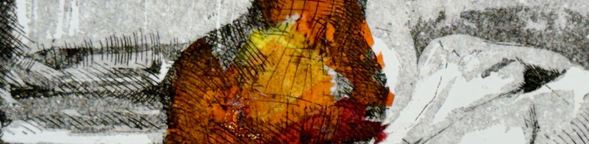

Print Making — An Introduction
Unit 1, Project 8

Research
Ultimately, etching is all about line work. There is no colour; and, in a way, it is even more stripped back than pencil—arguably what we consider the simplest form of visual art—because there is no tone either (unless it is built up through sophisticated hatching). Everything here is about the line.
All this research made me think very carefully about my subject for etching. What would allow me to use an interesting combination of lines? What subject requires a lot of interesting line work? What works better as an etching than a painting or a drawing or a photograph? Questions, so to speak, along those lines.
Rembrandt — etchings
Note to self: really play and exaggerate and focus on the line work when doing etchings. Line work is everything here.
Goya — Los Caprichos
Goya’s linework is much neater. There’s a certain freedom and complete confidence about Rembrandt that I prefer.

Picasso — etchings
Process
(planning, development, outcomes)
Reflection + Evaluation
There is a magic to this whole process that I haven’t fully put my finger on (if I could, then it wouldn’t be magic, right?). The seriousness of the materials, the ritualistic processes, the sensitivity of the plate, the lightness of reproduction, the richness of the final images... None of these things feels incidental to the others; they all speak to one another.
The physical process itself has an unmistakable gravity: metal, acid, pressure, thick & greasy ink. It is slow and ritualistic. As the ritual becomes muscle memory, we ourselves move around the studio like grooves in an etching. The final unveiling never loses its grip on us; we are willing to labour for hours for that moment, the alchemical conclusion.
And then there’s the replication. A single plate can give dozens of prints--our tutor says hundreds before the metal starts to wear--each on simple, modest paper. This ability to reproduce on this modest material feels like a poetic counterpoint to the heaviness and weight of the creation process itself. Then there’s the historical association with politics, concealment, darkness — the inky prints mirror their subjects in more ways than one.
Even the atmosphere in the print room seemed to reflect this harmony. I felt like everyone could sense that there was something special about what we were doing.
It was a real pleasure having four consecutive days in the print room. Unlike our other projects, which lasted a day or two, I could sense a shift on the morning of day three, as though I had passed some threshold and was really immersing myself. I started to understand the medium and its associated processes.
My initial instinct was that line work was central to etching, and I think that intuition was correct. There is something about the medium and the etching process that makes lines — thin and delicate ones, as well as a mass of scribbles — extraordinarily beautiful, in a way that pencil or ink simply cannot replicate. What surprised me, however, was aquatint. I wasn’t aware of the depth and richness of tone that one could achieve with this method, how dark, moody, and evocative an etching could be.
On the last day, we were given a quick 10–15 minute history lesson on the medium and the great artists of the past who were master etchers. Some I was familiar with from my research, some I wasn’t. I particularly wasn’t aware of how many old prints were created to spread a political message. The dark inkiness of the medium and its resulting prints lends itself so well to disturbing and politically charged subjects. A real marriage of medium and subject matter.
On a more personal note, I want to preserve the progression of my prints over these four days as a reminder to myself. I was so disappointed with my first etching. I thought it looked terribly amateur (of course it would!) and immediately became very critical of myself. But my second print was considerably better, and by the third, I was genuinely delighted with the result.
I know it sounds clichéd, but this project was such a clear lesson in trusting the process. Looking at my prints lined up chronologically, I can actually see the improvement happening. It’s a wonderful visual reminder to allow myself to play, make mistakes, and accept that some bad work is necessary to get to the good stuff.
- 191
- 193
- 195
- 199
- 203